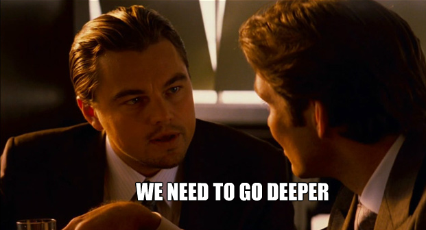

Introduction To Haskell
Lecture 6
Maps, Folds, and Beyond
Using These Slides
Every slide has a secret note.
- On Chrome: press
F12, then click Console - On IE: press
F12, then click Console - On Firefox:
Ctrl+Shift+k
Shortcut Keys:
↓, PgDn, n, j |
next slide |
↑, PgUp, p, k |
prev slide |
Esc |
enables ctrl+f globally |
Review of Homework 5
Create a Binary Tree Data Type in Haskell
-- Designed by Matthew A. Frazier
-- "I haven't actually tested it, but it compiles so it should work"
data Tree a = Leaf a | Node a (Tree a) (Tree a)
deriving (Show, Eq)
add :: Integral a => Tree a -> a
add (Leaf l) = l
add (Node i right left) = i + (add right) + (add left)
High Order Functions
Functions can take functions as arguments
Maps
A map applies a function to each element of a list
Prelude> map even [1..10]
[False,True,False,True,False,True,False,True,False,True]
Prelude> map (+5) [1..10]
[6,7,8,9,10,11,12,13,14,15]
Defining Map
Type signature:
map :: (a -> b) -> [a] -> [b]
Possible Implementation:
map f [] = []
map f (x:xs) = (f x):(map f xs)
Estimating π

piGuess :: Int -> Double
piGuess n = sum (map f [1..n])
f :: Int -> Double
f x = 4*(-1)^(x+1) / (2.0 * k - 1)
where k = fromIntegral x
Filters
A filter refines a list using a predicate
Prelude> filter even [1..10]
[2,4,6,8,10]
Prelude> filter (>5) [1..10]
[6,7,8,9,10]
Defining Filter
Type signature:
filter :: (a -> Bool) -> [a] -> [a]
Possible Implementation:
filter p [] = []
filter p (x:xs) | p x = x : filter p xs
| otherwise = filter p xs
Anonymous Function
We can use λ-calculus to define a function
Prelude> map (\x -> x*x) [1..10]
[1,4,9,16,25,36,49,64,81,100]
This notation is inspired from lambda calculus
λx.(x*x)
These Are Very Powerful
In the code below, take a look at the λ-function
Prelude> data Gender = Male | Female deriving (Show, Eq)
Prelude> let people = [(Male, "Mal"), (Female, "Zoe"),
(Male, "Wash"), (Female, "Inara"),
(Male, "Jayne"), (Female, "Kaylee")
(Male, "Simon"), (Female, "River")]
Prelude> filter (\(a,b) -> a==Female) people
[ (Female,"Zoe"), (Female,"Inara"),
(Female,"Kaylee"), (Female,"River") ]
Prelude> map snd it
["Zoe", "Inara", "Kaylee", "River"]
Folds
A fold scans an entire list to return a result
-- sum up all elements of a list
Prelude> foldl (+) 0 [1, 2, 3]
6
-- count the number of vowels in a String
Prelude> foldl (\acc x -> if x `elem` "aeiou"
then acc+1
else acc) 0 "hello world"
2

Scans
A scan shows the intermediate values of a fold
-- sum up all elements of a list
Prelude> scanl (+) 0 [1, 2, 3]
[0,1,3,6]
-- count the number of vowels in a String
Prelude> scanl (\acc x -> if x `elem` "aeiou"
then acc+1
else acc) 0 "hello world"
[0,0,1,1,1,2,2,2,3,3,3,3]
Function Application
The ($) function is called a function application.
It makes functions right associative
Prelude> not odd 4
ERROR!
Prelude> not (odd 4)
True
Prelude> not $ odd 4
True
The . Function
It composes functions in a readable manner
f(g(h(k(x)))) is ugly
(f.g.h.k)(x) is pretty
Prelude> (not.odd) 4
True
Prelude> (length.head.words) "University of Virginia"
10
Plethora of Functions
These are only some of the functions in Prelude
Haskell comes with a bunch more:
- Data.List
- Data.Char
- Data.Map
- Data.Set
...and more than 350 others!
Data.List
Prelude> import Data.List
Prelude Data.List> concat ["under","stand","able"]
"understandable"
Prelude Data.List> any (==0) [1,1,1,1,1,0,1]
True
Prelude Data.List> sort "hello"
"ehllo"
Data.Char
Prelude> import Data.Char
Prelude Data.Char> isNumber 'h'
False
Prelude Data.Char> toUpper 't'
'T'
Prelude Data.Char> map ord ['A'..'F']
[65,66,67,68,69,70]
Data.Map
Prelude> import Data.Map
Prelude Data.Map> let m = fromList [("CS", "Computer Science"),
("PHIL", "Philosophy")
("ASTR", "Astronomy")]
Prelude Data.Map> keys m
["CS","PHIL","ASTR"]
Prelude Data.Map> Data.Map.lookup "CS" m
Just "Computer Science"
Data.Set
Prelude> import Data.Set
Prelude Data.Set> let a = fromList [1..58]
Prelude Data.Set> let b = fromList [53..100]
Prelude Data.Set> intersection a b
fromList [53,54,55,56,57,58]
Prelude Data.Set> findMax $ union a b
100
Homework
- Fill out this form!
- Create a password strength checker
- at least 15 characters
- uppercase letters
- lowercase letters
- numbers
A strong password has
Prelude> :t strong
strong :: String -> Bool
Prelude> strong "sup3rL33Tpassw0rd"
True